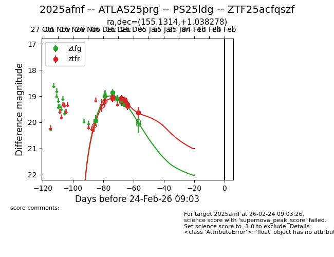
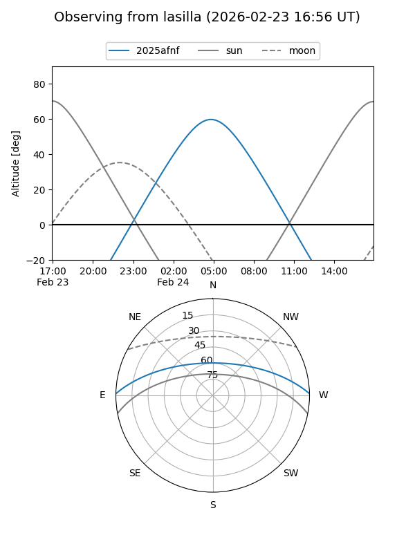
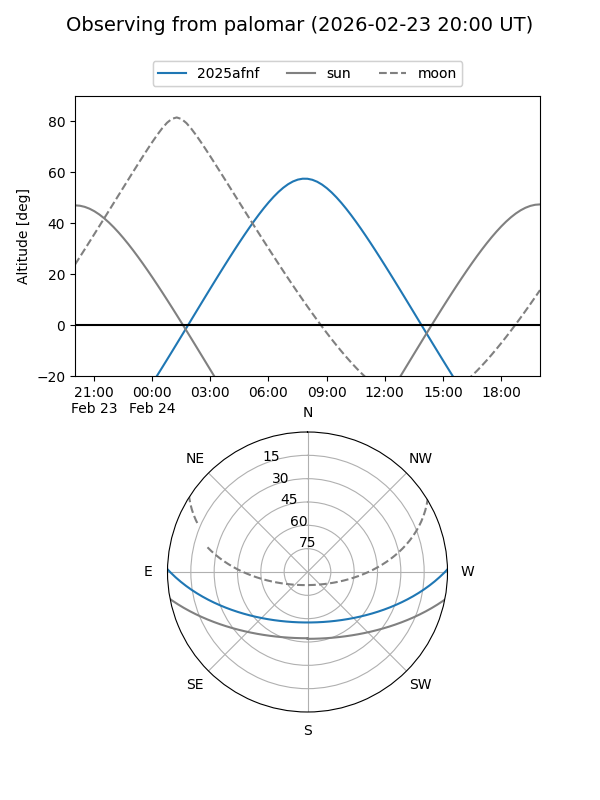
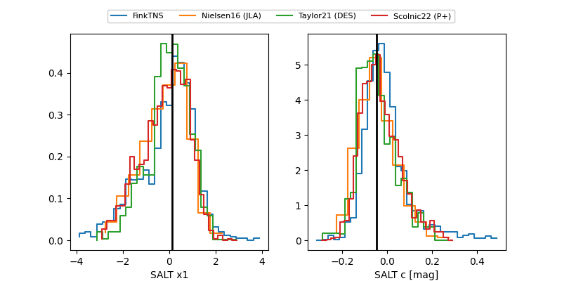

2025afnf
Target 2025afnf at 2025-12-31 02:11
Aliases and brokers:
FINK:
Lasair:
ALeRCE:
TNS:
YSE:
alt names
ZTF25acfqszf (ztf,fink_ztf)
2025afnf (tns,yse)
ATLAS25prg (atlas)
PS25ldg (panstarrs)
Coordinates:
equatorial (ra, dec) = 155.1314,+1.03828
equatorial (HMS+DMS) = 10:20:31.54,+01:02:17.80
galactic (l, b) = (242.3122,+45.40277)
Flags:
Photometry:
last atlaso=19.19, ztfg=19.37, ztfr=19.62
1 atlaso, 10 ztfg, 8 ztfr detections
Lightcurve

Visibility


Additional plots
